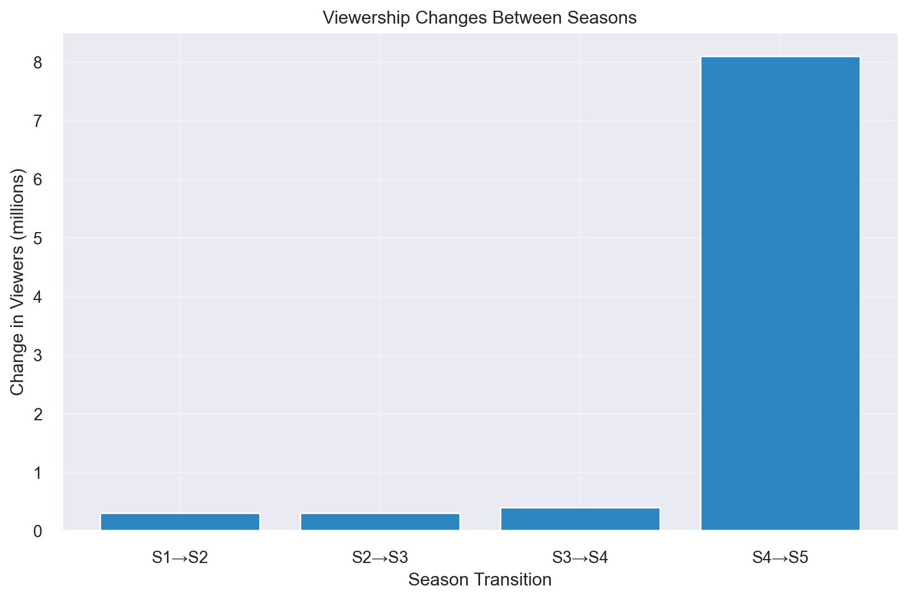

Breaking Bad is a critically acclaimed American television series created by Vince Gilligan. The show follows the transformation of Walter White (played by Bryan Cranston), a high school chemistry teacher turned methamphetamine manufacturer, and his former student Jesse Pinkman (played by Aaron Paul).
Breaking Bad Logo
2 Viewership Statistics
2.1 Overall Performance
The show aired from 2008 to 2013, spanning 5 seasons and 62 episodes. Here are some key statistics:
Average viewership per episode: {avg_viewership:.1f} million
Peak viewership: {peak_viewership:.1f} million (Series Finale)
# Calculate season-to-season changeschanges = pd.Series(viewership).diff().dropna()season_changes = [f'S{i}→S{i+1}'for i inrange(1, 5)]changes_data = pd.DataFrame({'Season_Change': season_changes,'Change': changes})plt.figure(figsize=(10, 6))plt.bar(changes_data['Season_Change'], changes_data['Change'], color='#2E86C1')plt.title('Viewership Changes Between Seasons')plt.xlabel('Season Transition')plt.ylabel('Change in Viewers (millions)')plt.grid(True, alpha=0.3)plt.show()
Viewership Changes Between Seasons

3 Analysis of Viewership Trends
The viewership of Breaking Bad showed a remarkable growth pattern throughout its run. Starting with an average of 1.2 million viewers in Season 1, the show experienced steady growth, reaching 1.5 million in Season 2. The most significant increase occurred between Seasons 4 and 5, with a jump from 2.2 million to 10.3 million viewers for the series finale.
This dramatic increase can be attributed to several factors: 1. Critical acclaim and word-of-mouth 2. Availability on streaming platforms 3. Social media buzz 4. The show’s reputation for quality storytelling
The data clearly shows that Breaking Bad’s popularity grew exponentially, particularly in its final seasons, cementing its place as one of the most successful television series of all time.